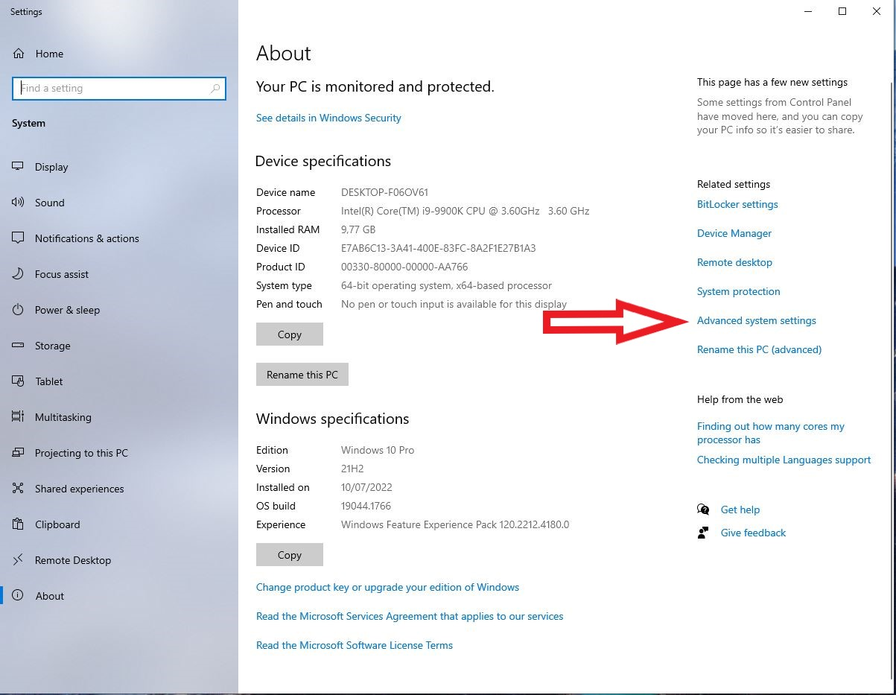
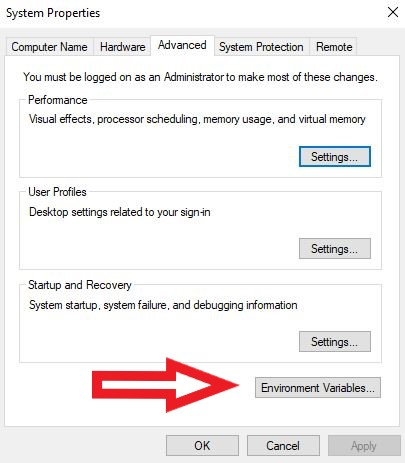
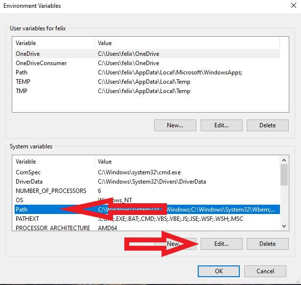
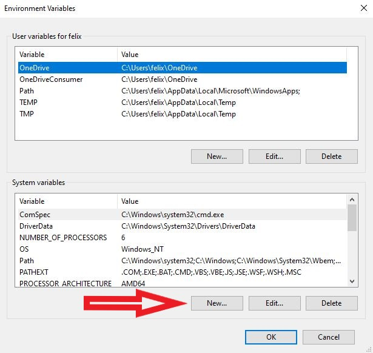
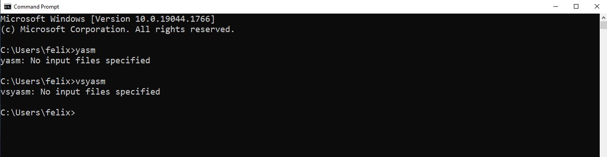

C:\Program Files (x86)\nasm
nasm

C:\Program Files\YASM

Variable name: YASMPATH
Variable value: C:\Program Files\YASM
yasm
vsyasm

These tools are not required to compile the standard VeraCrypt application binaries or the Windows driver with Visual Studio 2022 and the current WDK. Install them only when you need to rebuild the legacy BIOS bootloader in "src\Boot\Windows" or build solution configurations that include the Boot project, such as "ReleaseCustomEFI".
nasm
gzip
upx
dd --help
If you installed Visual Studio 2022 with the components listed above, this step can be skipped. Install the Build Tools only if you need a command-line build environment without the full Visual Studio IDE.
msbuild src\VeraCrypt.sln /m /p:Configuration=Release /p:Platform=x64
msbuild src\VeraCrypt.sln /m /p:Configuration=Release /p:Platform=ARM64
msbuild src\VeraCrypt.sln /m /p:Configuration=Release /p:Platform=Win32
msbuild src\Driver\Driver.vcxproj /m /p:Configuration=Release /p:Platform=x64
msbuild src\Driver\Driver.vcxproj /m /p:Configuration=Release /p:Platform=ARM64
msbuild src\VeraCrypt.sln /m /p:Configuration=ReleaseCustomEFI /p:Platform=x64
msbuild src\VeraCrypt.sln /m /p:Configuration=ReleaseCustomEFI /p:Platform=ARM64
With the sign_test.bat script you just signed the VeraCrypt executables. This is necessary, since Windows only accepts drivers, which are trusted by a signed Certificate Authority.
Since you did not use the official VeraCrypt signing certificate to sign your code, but a public development version, you have to import and therefore trust the certificates used.

if (!IsOSAtLeast (WIN_10))
return TRUE;
return TRUE;